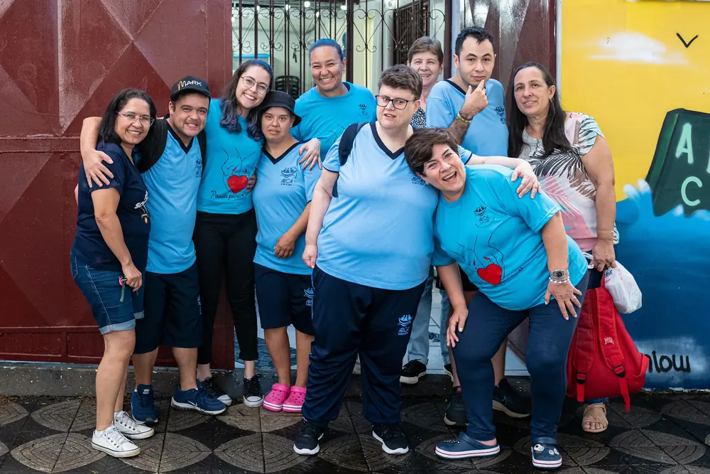
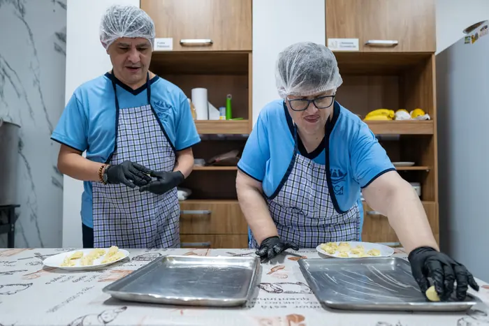
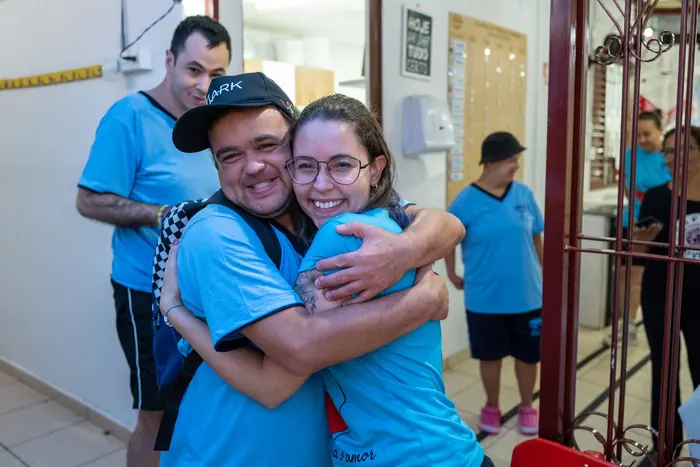
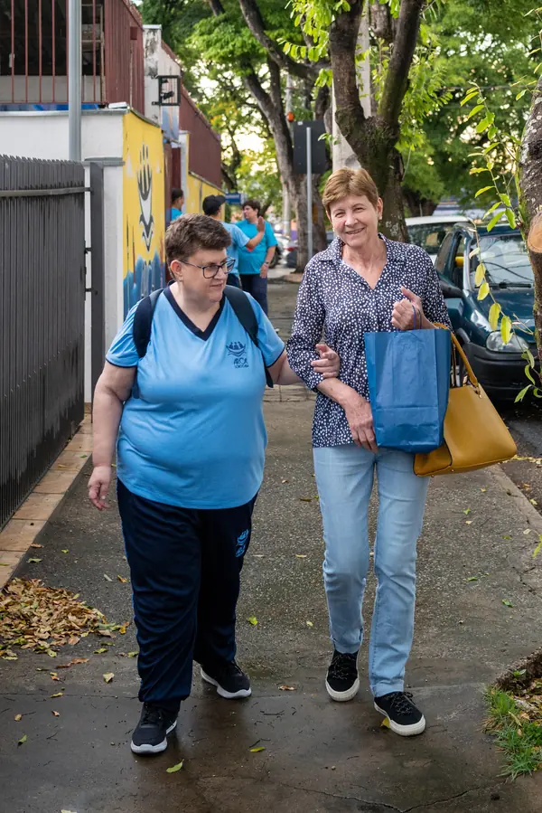

Todo mundo cuida da criança com deficiência. E quando ela vira adulta?
Em Sorocaba, existe uma casa que não abandona ninguém depois que a infância acaba. Com um valor mensal que cabe no seu bolso, você mantém essa casa de portas abertas. Torne-se um Guardião da ARCA.

- Sem valor mínimo
- Cancele quando quiser
- Prestação de contas no canal dos Guardiões
- Leva menos de um minuto
- Sem burocracia, sem contrato, sem letra miúda
Existe uma pergunta que quase ninguém faz.
Todo mundo já viu campanha de instituição que cuida de crianças com deficiência. E é justo, é comovente, e merece todo o apoio do mundo.
Mas quase ninguém pergunta o que acontece quando essa criança cresce.
Ela vira adulta. Sai da escola. Os programas acabam. Os pais se cansam. E, de repente, uma pessoa de 30, 40, 50 anos passa a viver dentro de casa, sem rotina, sem convivência, sem ninguém além da família. A deficiência não desaparece na vida adulta. O que desaparece é o cuidado.
É exatamente aí que a ARCA existe.
Uma casa aberta custa dinheiro todos os meses
Manter a ARCA funcionando custa cerca de R$ 30 mil por mês. Essa conta chega sem falta. A doação, não.
A ARCA Sorocaba acolhe pessoas adultas com deficiência intelectual há mais de dez anos. Aqui elas encontram oficinas, convivência, acompanhamento de equipe e, principalmente, autonomia. Não é um lugar para ocupar o tempo. É casa.
Só que manter uma casa aberta custa dinheiro todos os meses. Luz, água, alimentação, transporte, materiais das oficinas, equipe.
E aqui está o problema que quase ninguém enxerga: quase toda a arrecadação da ARCA vem de ações pontuais. Uma feijoada. Um bazar. Uma pizza solidária. Um almoço no drive thru.
Essas ações são maravilhosas e vamos continuar fazendo todas elas. Mas elas têm um limite cruel: dependem de esforço, de voluntário disponível e de sorte. Se chove no dia do evento, a arrecadação cai. Se falta gente para cozinhar, o evento não acontece. E o mês seguinte começa do zero, de novo.
Não dá para sustentar uma casa em cima da sorte.
A solução falsa é achar que uma grande campanha resolve. Que aparece um doador milionário. Que o poder público vai assumir. O que sustenta uma instituição não é o gesto grande e raro. É o gesto pequeno e constante.

O Guardião Mensal da ARCA
A ideia é simples: em vez de depender de eventos e de campanhas de emergência, a ARCA passa a contar com um grupo de pessoas que doam um valor fixo, todo mês. Pode ser pouco. O que importa não é o tamanho, é a constância.
Porque uma doação constante muda tudo. Ela transforma “será que a gente consegue esse mês?” em “a gente sabe com o que pode contar”. Ela permite planejar, comprar o material da oficina antes, garantir a refeição, manter a equipe.
Cada Guardião é uma linha a menos de incerteza no orçamento da casa. E é isso, nada mais que isso, que mantém as portas abertas.
Quatro passos, sem burocracia
Escolha o valor
Você escolhe o valor que cabe no seu orçamento. Qualquer valor, sem mínimo e sem máximo.
Contribua todo mês
Você faz a sua contribuição mensal pelo PIX: agende no app do seu banco ou repita a doação todo mês. Leva menos de um minuto.
Entre no canal dos Guardiões
Lá compartilhamos o que está acontecendo na casa, o que a sua doação manteve e o que vem por aí.
Acompanhe de perto
Você acompanha, de perto, o resultado do que ajudou a construir.
E só. Sem burocracia, sem contrato, sem letra miúda.
O que muda quando você é Guardião

- Você sustenta uma rotina, não um evento. Sua doação não vira uma foto bonita e acabou. Ela vira segunda-feira, terça-feira e quarta-feira de oficina acontecendo.
- Você escolhe o valor. Não existe piso. Uma doação pequena e constante vale mais para a ARCA do que uma grande e única.
- Você sabe exatamente para onde vai o seu dinheiro. A gente presta contas. Você vai ver a casa por dentro, não só o pedido de ajuda.
- Você apoia um público que quase ninguém apoia. Adultos com deficiência intelectual são invisíveis nas políticas públicas e nas campanhas.
- Você faz parte de uma comunidade, não de uma lista. Guardião não é doador anônimo. Você é convidado a conhecer a casa, participar dos eventos e conviver.
- Você cancela quando quiser. Nenhum compromisso te prende. Se um mês apertar, você pausa. A ARCA entende.
A ARCA em números e em confiança
Eles não estão aqui porque não tinham outro lugar. Estão aqui porque este é o lugar deles.
- Nota 5,0 no Google, avaliada por quem conhece a casa de perto.
- Mais de 10 anos de trabalho contínuo em Sorocaba, sem interrupção.
- 77 pessoas já apoiaram financeiramente a ARCA na nossa última campanha.
- A ARCA integra a rede internacional L'Arche, presente em dezenas de países.
- Contamos com o apoio de empresas parceiras, como o Supermercado Confiança, por meio da Ação Fraternal.
Este programa é para você?
Este programa é para você que:
- Acredita que dignidade não tem idade e que uma pessoa adulta com deficiência merece uma vida com rotina, convívio e propósito.
- Prefere ajudar de forma constante e discreta, sem precisar de evento nem de holofote.
- Quer saber exatamente para onde vai o seu dinheiro e valoriza uma instituição que presta contas.
Este programa não é para você que:
- Procura retorno financeiro, benefício fiscal ou contrapartida comercial.
- Quer ajudar apenas uma vez, num gesto pontual. (Nesse caso, participe dos eventos ou faça uma doação única.)
- Quer apoiar uma causa de grande visibilidade nacional. A ARCA é local e cuida de um grupo pequeno de pessoas por vez.

Doação não tem garantia. Tem prestação de contas.
E a gente sabe que essa é a pergunta que te trava: “como eu sei que o meu dinheiro está sendo bem usado?”
É uma pergunta justa. E a nossa resposta é simples: você vai ver.
Manter a ARCA custa cerca de R$ 30 mil por mês. Esse dinheiro vira alimentação, transporte, materiais das oficinas, contas da casa e a equipe que acompanha cada pessoa acolhida, todos os dias.
Todo Guardião entra no nosso canal e recebe, com regularidade, o que aconteceu na casa. Você não vai receber só um agradecimento genérico. Você vai receber o resultado.
E a nossa porta está sempre aberta. A gente não tem nada a esconder. A gente tem muito a mostrar.
O que as pessoas mais perguntam
Não existe. Você escolhe o que cabe no seu orçamento.
Pelo PIX: você agenda o PIX mensal no app do seu banco ou repete a doação todo mês. Leva menos de um minuto. A doação com cartão ainda não está disponível.
Sim, a qualquer momento, sem justificativa, sem multa.
Todo Guardião recebe prestação de contas e pode visitar a ARCA.
Pessoas adultas com deficiência intelectual, de Sorocaba e região.
Não. Se mantém com doações, bazar e ações solidárias.
Pode: bazar, voluntariado, divulgação, eventos.
A ARCA não pode esperar o mês que vem. E você não precisa esperar também.
A conta de luz da ARCA chega esse mês. A comida precisa estar na mesa esse mês. As oficinas acontecem esse mês. Sem o Guardião, o mês da ARCA começa no escuro. Com o Guardião, o mês começa com chão.
A diferença não é uma grande doação. É um grupo de pessoas comuns fazendo uma coisa pequena, todo mês, sem falhar. Leva menos de um minuto para se tornar um Guardião. As pessoas daqui contam com você.
Quero ser um Guardião da ARCA